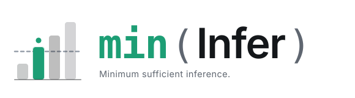

Open-source · model intelligence registry
MinInfer collects evidence from provider APIs, catalogs, pricing pages and benchmarks, then routes each request to the cheapest deployment that clears the bar for that task. Prefer free. Pay only when necessary.
The LLM market moves weekly. Models launch, get retired, change price, hit rate limits, or appear on a new gateway with a free tier. The same weights can cost nothing on one provider and a lot on another.
So MinInfer keeps three things apart that most routers blur together: the model (what it can do), the deployment (provider, price, limits, latency, availability), and the task (what has to be true for an answer to count). A request is routed by filtering deployments against the task, then picking the cheapest survivor.
The registry describes what exists. Live evidence determines what is usable.
Ranking runs on cost per success: expected spend divided by the lower-bound probability the model actually completes the task. A model that fails half the time costs more than its sticker price says.
| Deployment | List price | Success lower bound | Verdict |
|---|---|---|---|
| Free tier Ano track record yet | $0.000 | 0.31 | below floor |
| Free tier Bproven on this task | $0.000 | 0.88 | selected |
| Small paid modelfallback | $0.004 | 0.91 | fallback 1 |
| Frontier modellast resort | $0.060 | 0.97 | fallback 2 |
Illustrative numbers. Free arms that clear the quality floor all tie at zero, so the router breaks ties with a small exploration bonus. That is what stops one free model from answering every request.
The router scores each model per task with the Wilson lower bound of its success rate, seeded with a benchmark prior so cold starts aren’t blind. Small samples get penalised until evidence accumulates. Try it:
Black tick: raw rate. Bar: lower bound at z = 1.96. Dashed line: the task’s quality floor.
Untried free models get their evidence without risking users. A small slice of traffic is duplicated in the background to an untried arm after the real answer has already been sent. An LLM judge scores the shadow reply, the result is recorded as a judge_trial observation, and once the lower bound clears the floor the model graduates to real traffic. Nobody waits on it and nobody is billed for it.
Intent comes from heuristics and a local model, so routing doesn’t burn a paid call to decide where to spend. Ambiguous prompts merge the profiles of the competing tasks and satisfy both.
Context length, modality, credentials, and quota headroom. Headroom is the minimum of the configured limit and what the provider’s live x-ratelimit-* headers last said.
Cost per success decides the order. No single model may take more than 60% of a task’s traffic, and manual pins expire after 24 hours, so the system can’t fixate.
A 429, timeout or dropped connection moves the same request to the next ranked arm. Once streaming starts the router is committed, because a half-sent stream can’t be unsent.
Every outcome, including a 404 for a retired model, becomes evidence. The next decision is made against it.
prompt estimate + max_tokens before the call, so a limit is a ceiling rather than a suggestion you overshoot by one request.# clone and install git clone https://github.com/zerocool909/mininfer-oss.git cd mininfer-oss python3 -m venv .venv && source .venv/bin/activate pip install -e . # copy .env.example to .env, add the provider keys you have, then: mi proxy --port 8765
curl http://127.0.0.1:8765/v1/chat/completions \
-H "Content-Type: application/json" \
-d '{"model":"auto","messages":[{"role":"user","content":"Summarise this"}]}'
Open http://127.0.0.1:8765 for the dashboard: the model registry with untried, trialing and proven states, the chat playground, and the decision log. The README covers configuration, quotas and the full API contract.